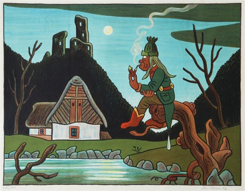

Strašidla a nadpřirozené bytosti
Podle místa výskytu dělíme strašidla a nadpřirozené bytosti na
Domácí
Strašidla jsou seřazena podle jejich otravnosti, od nejhoršího k nejméně otravnému:
- ghúl
- šotek
- ponožkožrout
- obecný
- koupelnový
- zoubková víla
- kostlivec ve skříni
Ačkoliv v některých domácnostech nebyl výskyt všech výše uvedených bytostí potvrzen, dá se předpokládat, že se vyskytují ve všech domech, bytech ba i víkendových chatách a chalupách.
Vodní
- vodník
- mořská panna
- siréna
- kraken

Vodní strašidla by se dala dále dělit na sladkovodní a mořská. Je ovšem otázka, zda je mořská panna vůbec strašidlo.
Způsoby boje proti strašidlům
Nefunguje nic, než se s jejich přítomnosti smířit. To je odradí a většinou se přestěhujou jinam.
Močálová
| Jméno | Počet examplářů v Jihočeském kraji | Popis |
|---|---|---|
| bludička | 50 | Její přítomnost poznáte podle mihotavého světla. |
| víla | 0 | Bližší informace o těchto strašidlech nejsou známy. |
| hejkal | 5 | |
| peklík | 1 | "Vypadají jako houby, ale umějí se přeměňovat do různých tvarů" | >
Výskyt močálových neboli bažinných strašidel byl zatím potvrzen pouze v letních měsících. V zimě bažiny zamrzají a tak vědci předpokládají, že močálová strašidla spí zimním spánkem.
Lesní strašidla
- hejkal
- lesní divoženka
Jedná se o nejméně probádanou skupinu. O jejích zástupcích nelze s jistotou říct téměř nic. Hejkala je často obtížné odlišit od sovy, lesní divoženku zase od dívek s rozpuštěnými vlasy, účastnících se různých bojovek, jejichž výskyt v lesích bývá poměrně vysoký, zejména v létě.